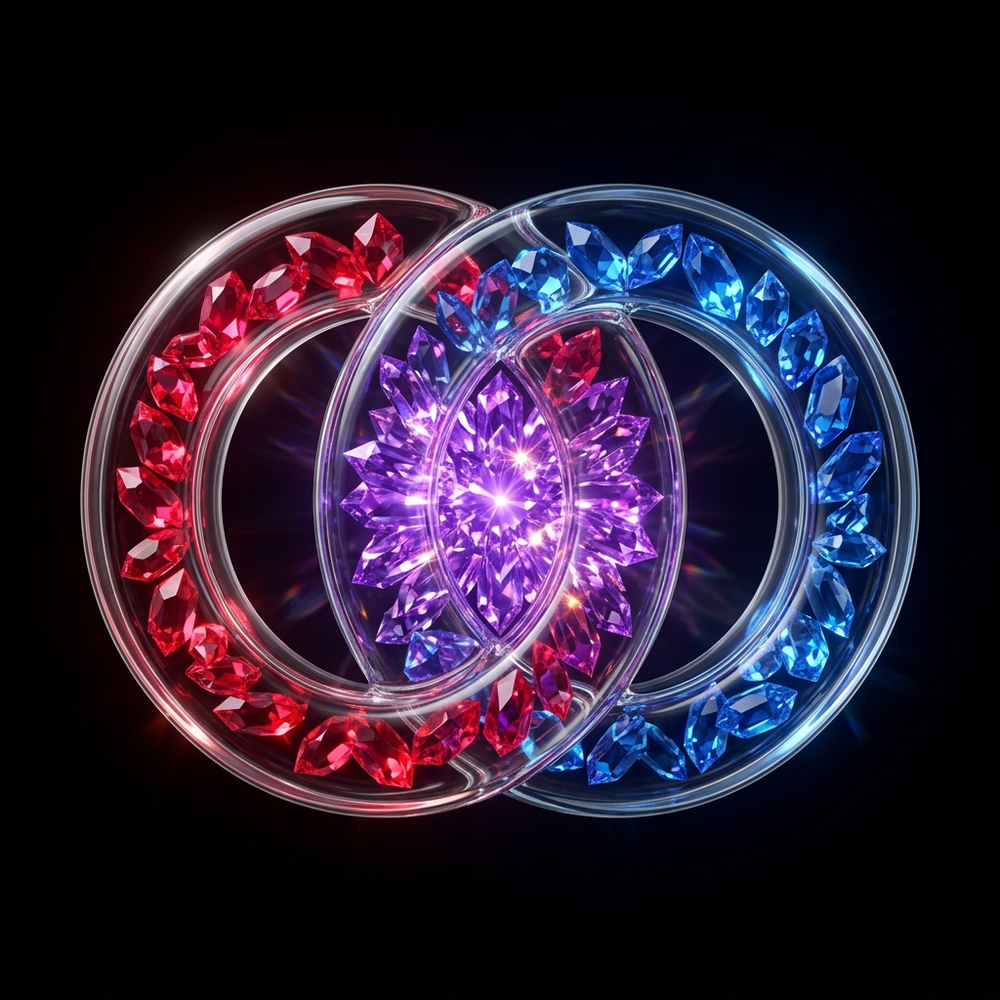

Prisma Facetado de Cuarzo & Gema
Facetas geométricas angulares de cristal tallado con aristas caústicas
Inspirada en el corte de gemas de alta joyerÃa y prismas de cuarzo fÃsico. Los aros no son simples tubos lisos: están esculpidos mediante polÃgonos de cristal facetado que reflejan y refractan la luz a diferentes ángulos de incidencia.
Planos facetados de cuarzo rosa y rubà birmano con reflejos cálidos y aristas de corte brillante.
Planos facetados de zafiro de Ceilán y topacio azul con destellos cian de alta refracción.
Cluster de facetas entrelazadas en amatista imperial con un diamante central radiante y aristas blancas.
Cápsula de Vidrio con Núcleo de Gemas
Tubo exterior de borosilicato lÃquido conteniendo cristales geométricos en su interior
Traduce de forma literal y sublime la petición: "como si fueran cristales en su interior". Cuenta con una envolvente exterior tubular de vidrio borosilicato puro (con biseles especulares y refracción transparente), y en el interior de cada tubo viaja una constelación de gemas talladas. En la unión de ambos anillos, los cristales rojos y azules colisionan y se funden en una roseta de amatista radiante.
Cristales de rubà con facetas orientadas a lo largo de la curvatura del tubo transparente.
Cristales de zafiro y topacio suspendidos dentro de la cámara cilÃndrica de vidrio.
Los cristales se entrecruzan formando un núcleo de amatista de 8 facetas con destello blanco central.
Lentes de Cristal Entrelazadas 3D
Entrelazado topológico real con mezcla aditiva fÃsica a través de las capas de vidrio
Representa dos toroides de cristal óptico macizo (estilo Baccarat o cristal de cuarzo de alta densidad) que se entrelazan fÃsicamente en 3D: el aro rojo pasa por delante en el cruce superior y por detrás en el inferior. Debido a la refracción translúcida, el aro posterior se ve filtrado a través del cuerpo de cristal delantero, generando tonos violeta y magenta orquÃdea fÃsicos.
El cristal rojo cruza por delante del azul: la mezcla de Ãndices produce violeta profundo con bisel reflectante.
El cristal azul cruza por delante del rojo: refracción en magenta orquÃdea vibrante con sombra de oclusión.
Vesica piscis óptica con anillos concéntricos de refracción y destello focal central.
Estructura Geométrica Mineral & Caústicas
Malla de red cristalina isométrica interna con nodos de cuarzo luminiscentes
Visualiza el interior de los aros de vidrio como una matriz molecular cristalina (red de diamante o geoda geométrica). Cada anillo proyecta una red de filamentos láser y nodos de cuarzo. En la unión de los anillos, ambas mallas se interpenetran formando una roseta sagrada de amatista con un diamante central radiante de caústica pura.
Puntos de cuarzo rojo con aristas de interconexión geométrica dentro del aro izquierdo.
Puntos de cuarzo azul con filamentos reflectantes dentro del aro derecho.
Super-malla de diamante que fusiona ambos campos en un nodo central de cristal blanco puro.
Visualización FÃsica Volumétrica
Render fotorrealista que ilustra el comportamiento óptico de la refracción del vidrio lÃquido y cómo los cristales de rubà y zafiro en el interior estallan en amatista radiante en el centro.

• Conexión con los SVGs vectoriales:
Mientras que el render 3D rasterizado aporta una guÃa de iluminación global, los 4 SVGs anteriores han sido calibrados como gráficos vectoriales puros sin pérdida, con pesos inferiores a 16KB y una nitidez perfecta a 60fps tanto en pantallas 4K Retina como en iconos reducidos de 32px en la barra de estado de iOS.
• Cumplimiento Apple HIG:
Fondo OLED absoluto (#000000), curvatura continua G2 Apple Squircle, biseles de pelo de cristal (1.5px hairline specularity) y contraste verificado para Dark Mode y Light Mode.